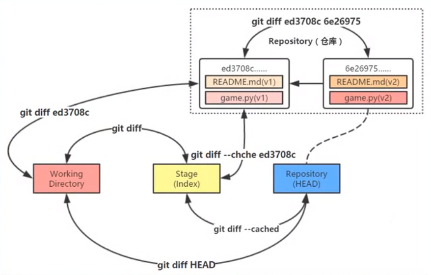

初次使用Git前的配置
xxxxxxxxxx241git config --global user.name "username"2git config --global user.email "email"34C:\Users\WZ>git config --list5diff.astextplain.textconv=astextplain6filter.lfs.clean=git-lfs clean -- %f7filter.lfs.smudge=git-lfs smudge -- %f8filter.lfs.process=git-lfs filter-process9filter.lfs.required=true10http.sslbackend=openssl11http.sslcainfo=D:/Git/mingw64/ssl/certs/ca-bundle.crt12core.autocrlf=true13core.fscache=true14core.symlinks=false15pull.rebase=false16credential.helper=manager-core17credential.https://dev.azure.com.usehttppath=true18init.defaultbranch=master19filter.lfs.process=git-lfs filter-process20filter.lfs.required=true21filter.lfs.clean=git-lfs clean -- %f22filter.lfs.smudge=git-lfs smudge -- %f23user.name=aghb12324user.email=wangzhuang137@gmail.com //注册成功
工作区域、暂存区域和Git仓库

Git的工作流程
Git的工作流程一般是：
- 在工作目录中添加、修改文件
- 将需要进行版本管理的文件放入暂存区域
- 将暂存区域的文件提交到Git仓库
Git管理的文件有三种状态：
- 已修改（modified）
- 已暂存（staged）
- 已提交（committed）
练习
- 创建仓库
xxxxxxxxxx21G:\github\Git_test>git init2Initialized empty Git repository in G:/github/Git_test/.git/
- 添加文件
xxxxxxxxxx61G:\github\Git_test>git add README.md //将文件加入暂存区23G:\github\Git_test>git commit -m "add a readme file" //将文件提交到仓库，附加说明4[master (root-commit) 3e76ed6] add a readme file5 1 file changed, 1 insertion(+)6 create mode 100644 README.md- 查看状态
git status
xxxxxxxxxx731G:\github\Git_test>git status2On branch master3nothing to commit, working tree clean4//添加LICENSE文件5G:\github\Git_test>git status6On branch master7Untracked files:8 (use "git add <file>..." to include in what will be committed)9 LICENSE1011nothing added to commit but untracked files present (use "git add" to track)1213//撤销将LICENSE添加到暂存区14G:\github\Git_test>git restore --staged LICENSE1516G:\github\Git_test>git status17On branch master18Untracked files:19 (use "git add <file>..." to include in what will be committed)20 LICENSE2122nothing added to commit but untracked files present (use "git add" to track)2324//修改README.md25G:\github\Git_test>git status26On branch master27Changes not staged for commit:28 (use "git add <file>..." to update what will be committed)29 (use "git restore <file>..." to discard changes in working directory)30 modified: README.md3132no changes added to commit (use "git add" and/or "git commit -a")3334G:\github\Git_test>git restore README.md //撤销工作区的修改3536//修改README.md之后，再加入到暂存区，然后再修改README.md37G:\github\Git_test> git status38On branch master39Changes to be committed:40 (use "git restore --staged <file>..." to unstage)41 modified: README.md4243Changes not staged for commit:44 (use "git add <file>..." to update what will be committed)45 (use "git restore <file>..." to discard changes in working directory)4647G:\github\Git_test>git status -s //简短模式查看状态48MM README.md4950G:\github\Git_test>git add README.md5152G:\github\Git_test>git status -s53M README.md5455//查看日志56G:\github\Git_test>git log57commit 3b73f3432d9da32413cda486b553a1244a1473ae (HEAD -> master)58Author: aghb123 <wangzhuang137@gmail.com>59Date: Wed Jan 20 17:00:53 2021 +08006061 modified README.md6263commit e4fd1f34e645f031a8c012fc370f099f1abaf78b64Author: aghb123 <wangzhuang137@gmail.com>65Date: Wed Jan 20 16:28:11 2021 +08006667 add LICENSE6869commit 3e76ed6b35181f2b31e8084477a7be30ccaefb9a70Author: aghb123 <wangzhuang137@gmail.com>71Date: Wed Jan 20 16:04:14 2021 +08007273 add a readme file撤销操作

git reset
reset 重新设置的意思，其实就是用来设置分支的头部指向，当进行了一系列的提交之后，忽然发现最近的几次提交有问题，想从提交记录中删除，这是就会用到 git reset 命令，这个命令后面跟 commit id，表示当前分支回退到这个 commit id 对应的状态，之后的日志记录被删除，工作区中的文件状态根据参数的不同会恢复到不同的状态。
--soft: 被回退的那些版本的修改会被放在暂存区，可以再次提交。--mixed: 默认选项，被回退的那些版本的修改会放在工作目录，可以先加到暂存区，然后再提交。--hard: 被回退的那些版本的修改会直接舍弃，好像它们没有来过一样。
这样来看，git reset 命令好像是用来回退版本的，但是如果使用 git reset HEAD file_name 命令就可以将一个文件回退到 HEAD 指向版本所对应的状态，其实就是当前版本库中的状态，也就相当于还原了本地的修改。
reset命令回滚快照过程
- 移动HEAD的指向(--soft)
- 将快照回滚到暂存区域([--mixed],默认)
- 将暂存区域还原到工作目录(--hard)
reset回滚指定快照*
git reset 版本快照的ID号
reset回滚个别文件
git reset 版本快照 文件名/路径
版本对比
- 比较暂存区域与工作目录
git diff
- 比较两个历史快照
git diff 快照1ID 快照2ID
- 比较当前工作目录和Git仓库中的快照
git diff 快照ID
- 比较暂存区域和Git仓库快照
git diff --cached [快照ID]

修改最后一次提交
在实际开发中，可能遇到以下两种情景：
——情景一：版本刚一提交(commit)到仓库，突然想起漏掉两个文件还没有添加(add)
——情景二：版本刚一提交(commit)到仓库，突然想起版本说明写得不够全面，无法彰显本次修改的重大意义
执行带
--amend选项的commit提交命令，Git就会更正最近的一次提交
删除文件
不小心删除本地仓库里的文件，可以通过暂存区恢复
git checkout -- README.md
git rm 文件名——该命令删除的只是工作目录和暂存区域的文件，也就是取消跟踪，再下次提交时不纳入版本管理
——当工作目录和暂存区域的同一个文件存在不同内容时，执行
git rm -f 文件名命令就可以把两个都删除——如果只删除暂存区域的文件(保留工作目录的)，那么可以执行
git rm --cached 文件名命令实现目的
重命名文件
git mv 旧文件名 新文件名——ren/mv 旧文件名 新文件名
——git rm 旧文件名
——git add 新文件名
Git分支
- 创建分支
git branch 分支名
- 切换分支
git checkout 分支名
xxxxxxxxxx61G:\github\Git_test2>git log --decorate --oneline --graph --all2* 2aac3cc (HEAD -> master) change the README file again3| * 4d2155d (feature) change the README file4|/5* 95a0e76 commit all modified file plus readme6* 32556e1 pinyougou
- 分支的合并
git merge 分支名
xxxxxxxxxx81G:\github\Git_test2>git log --decorate --oneline --graph --all2* b112584 (HEAD -> master) fix conflicts3|\4| * 4d2155d (feature) change the README file5* | 2aac3cc change the README file again6|/7* 95a0e76 commit all modified file plus readme8* 32556e1 pinyougou
- 删除分支
git branch -d 分支名
checkout
两种功能：
- 从历史快照(或者暂存区域)中拷贝文件到工作目录
- 切换分支
checkout命令和reset命令都可以用于恢复指定快照的指定文件，并且都不会改变HEAD指针的指向
区别是reset命令只将指定文件恢复到暂存区域(--mixed)，而checkout命令同时覆盖暂存区域和工作目录
本地仓库往远程仓库推送
xxxxxxxxxx441G:\github\Learning>git status2On branch main3Your branch is up to date with 'origin/main'.45Changes not staged for commit:6(use "git add/rm <file>..." to update what will be committed)7(use "git restore <file>..." to discard changes in working directory)8deleted: HTML+CSS/css/Cutterman_panel_3.5.0_201711141423.exe910Untracked files:11(use "git add <file>..." to include in what will be committed)12HTML+CSS/css/Cutterman_panel_3.5.0_201711141423.zip1314no changes added to commit (use "git add" and/or "git commit -a")1516G:\github\Learning>git add HTML+CSS/css/Cutterman_panel_3.5.0_201711141423.zip1718G:\github\Learning>git rm HTML+CSS/css/Cutterman_panel_3.5.0_201711141423.exe19rm 'HTML+CSS/css/Cutterman_panel_3.5.0_201711141423.exe'2021G:\github\Learning>git status22On branch main23Your branch is up to date with 'origin/main'.2425Changes to be committed:26(use "git restore --staged <file>..." to unstage)27renamed: HTML+CSS/css/Cutterman_panel_3.5.0_201711141423.exe -> HTML+CSS/css/Cutterman_panel_3.5.0_201711141423.zip282930G:\github\Learning>git commit -m "Replace the exe file"31[main 8383346] Replace the exe file321 file changed, 0 insertions(+), 0 deletions(-)33rename HTML+CSS/css/{Cutterman_panel_3.5.0_201711141423.exe => Cutterman_panel_3.5.0_201711141423.zip} (70%)3435G:\github\Learning>git push origin main36Enumerating objects: 8, done.37Counting objects: 100% (8/8), done.38Delta compression using up to 16 threads39Compressing objects: 100% (5/5), done.40Writing objects: 100% (5/5), 1.19 MiB | 173.00 KiB/s, done.41Total 5 (delta 3), reused 0 (delta 0), pack-reused 042remote: Resolving deltas: 100% (3/3), completed with 3 local objects.43To https://github.com/aghb123/Learning.git449932b75..8383346 main -> main
工作区的更改必须线提交到本地仓库，才能推送到远程仓库里
删除Git本地仓库
删除Git本地仓库的根本原理是删除“Git本地仓库”里面的根目录下面的隐藏文件夹".git"
方法一：自己手动删除掉Git本地仓库里面的根目录下面的隐藏文件夹".git"
方法二：在本地仓库的目录下调用命令行删除根目录下的.git文件夹，输入
xxxxxxxxxx11find . -name ".git" | xargs rm -Rf
检验是否成功删除了本地仓库：在Gitbash中进入仓库的目录中，如果目录末尾没有"(master)"，说明成功删除了本地仓库
xxxxxxxxxx51WZ@DESKTOP-8SQ1L5C MINGW64 /g/github/demo (master)2$ find . -name ".git" | xargs rm -Rf34WZ@DESKTOP-8SQ1L5C MINGW64 /g/github/demo5$
gitbash无法显示中文
xxxxxxxxxx11git config --global core.quotepath false
无法推送的一种原因
xxxxxxxxxx351WZ@DESKTOP-8SQ1L5C MINGW64 /g/github/Learning (main)2$ git push origin main3To https://github.com/aghb123/Learning.git4! [rejected] main -> main (fetch first)5error: failed to push some refs to 'https://github.com/aghb123/Learning.git'6hint: Updates were rejected because the remote contains work that you do7hint: not have locally. This is usually caused by another repository pushing8hint: to the same ref. You may want to first integrate the remote changes9hint: (e.g., 'git pull ...') before pushing again.10hint: See the 'Note about fast-forwards' in 'git push --help' for details.1112WZ@DESKTOP-8SQ1L5C MINGW64 /g/github/Learning (main)13$ git pull14remote: Enumerating objects: 5, done.15remote: Counting objects: 100% (5/5), done.16remote: Compressing objects: 100% (3/3), done.17remote: Total 3 (delta 1), reused 0 (delta 0), pack-reused 018Unpacking objects: 100% (3/3), 722 bytes | 3.00 KiB/s, done.19From https://github.com/aghb123/Learning205f26f0e..5bf2c62 main -> origin/main21Merge made by the 'recursive' strategy.22README.md | 3 ++-231 file changed, 2 insertions(+), 1 deletion(-)2425WZ@DESKTOP-8SQ1L5C MINGW64 /g/github/Learning (main)26$ git push origin main27Enumerating objects: 15, done.28Counting objects: 100% (13/13), done.29Delta compression using up to 16 threads30Compressing objects: 100% (7/7), done.31Writing objects: 100% (7/7), 1.96 KiB | 1.96 MiB/s, done.32Total 7 (delta 5), reused 0 (delta 0), pack-reused 033remote: Resolving deltas: 100% (5/5), completed with 4 local objects.34To https://github.com/aghb123/Learning.git355bf2c62..0192cd2 main -> main
本地仓库未与远程仓库同步(也就是远程仓库所作的改变本地仓库没有跟进)，此时推送会失败，git pull之后再git push即可，注意先后顺序即可